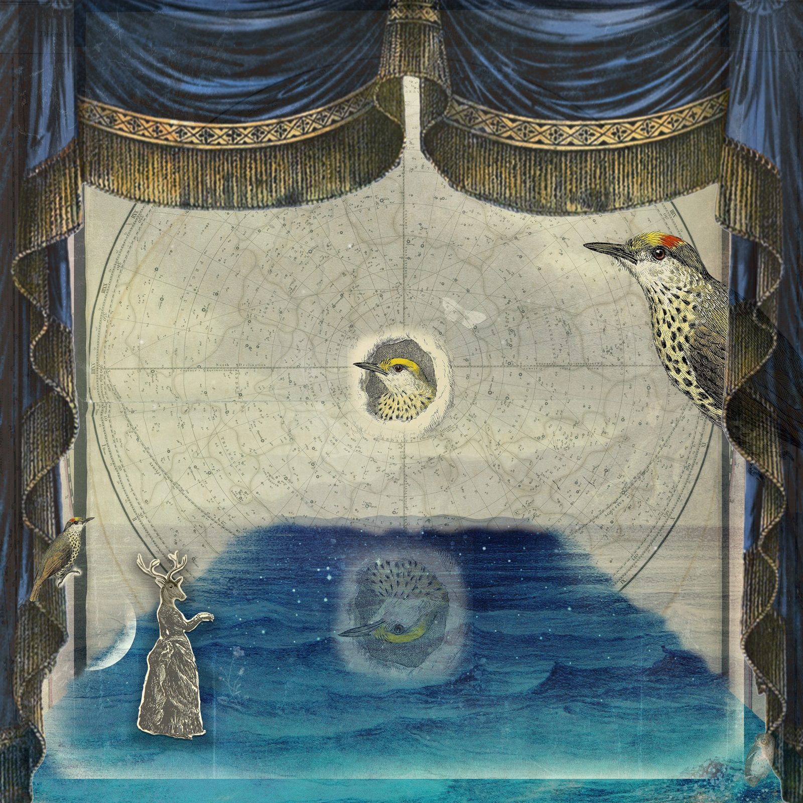

The ministry of small injustices uses woodpeckers and alliterative verse to solve the problem of rising sea levels.

- Problem (chosen)
- Rising sea levels
- Creature (dealt)
- Woodpecker
- Form (dealt)
- Alliterative verse
Coasts fail against the sea because they wish to stay where they are. A great spotted woodpecker does not repair last year’s nest. It carves a new hole each spring, often in the same tree, and leaves the old one to whoever comes next: a starling, a bat, a family of tits, a ladder of abandoned rooms up the bark. No woodpecker has applied to the Ministry for flood defences. The Ministry has assumed that each new hole is higher than the last.
The department of alliterative verse suggests that the coast withdraws as a line does, from one stressed sound to the next. Each spring, households move from the first half of the line to the second, provided the two places share a sound: sea to shore, shore to slope, slope to summit. Deliberation proceeds in long, unrhymed lines and ends with the bob, a single word of two syllables, which is binding.
Risks. Vacated homes are allocated to whatever arrives next. The Ministry expects fish. The line does not end at the summit, and the next sound is sky.
The sea at the sill and the salt in the stairwell,
we hew a new hollow high in the hillside
And loss is a season
the tides understand.
[Your credit line: how the report was drafted, edited and illustrated]